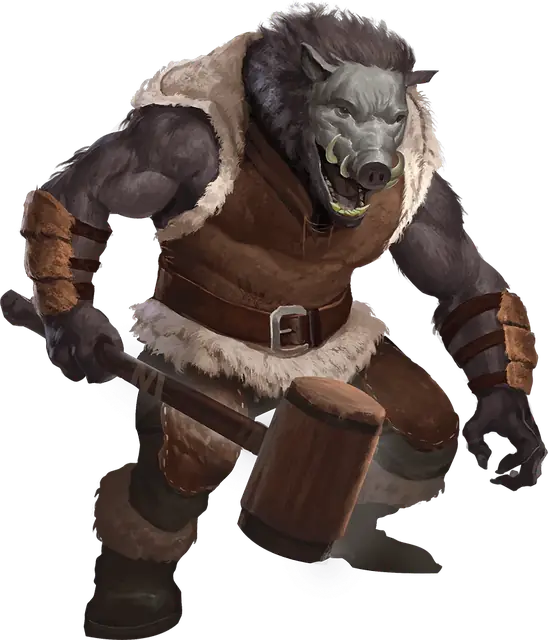

Вервепрь
Wereboar
Среднее или Маленькое Чудовище (Ликантроп), Нейтральное Злое

Класс Защиты 15 Инициатива +2 (12)
Хиты 97 (15к8 + 30)
Скорость 30 футов, Плавания 40 футов (только в форме кабана)
| мод | спас | ||
|---|---|---|---|
| СИЛ | 17 | +3 | +3 |
| ЛОВ | 10 | +0 | +0 |
| ТЕЛ | 15 | +2 | +2 |
| мод | спас | ||
|---|---|---|---|
| ИНТ | 10 | +0 | +0 |
| МДР | 11 | +0 | +0 |
| ХАР | 8 | −1 | −1 |
Чувства пассивное Восприятие 12
Языки Общий (не может говорить в форме кабана)
Опасность 4 (1 100 опыта; БВ +2)
Действия
Мультиатака. Вервепрь совершает две атаки Бивнями или Метательным копьём в любой комбинации. Он может заменить одну из этих атак на атаку Клыками.
Бивни (только в форме кабана или в гибридной форме). Бросок рукопашной атаки: +5, досягаемость 5 фт. Попадание: 10 (2к6 + 3) Колющего урона. Если цель — существо Среднего размера или меньше, а вервепрь переместился к ней по прямой хотя бы на 20 футов сразу перед попаданием, она получает 7 (2к6) дополнительного Колющего урона и Опрокидывается.
Метательное копьё (только в форме гуманоида или в гибридной форме). Бросок рукопашной или дальнобойной атаки: +5, досягаемость 5 фт. или дистанция 30/120 фт. Попадание: 13 (3к6 + 3) Колющего урона.
Клыки (только в форме кабана или в гибридной форме). Бросок рукопашной атаки: +5, досягаемость 5 фт. Попадание: 12 (2к8 + 3) Колющего урона. Если цель — Гуманоид, она подвергается воздействию следующего эффекта: Спасбросок Телосложения: Сл 12. Провал: Цель проклята. Когда Хиты проклятой цели опускаются до 0, она становится Вервепрем под управлением Мастера и получает 10 Хитов. Успех: Цель становится невосприимчива к проклятью этого вервепря на 24 часа.
Бонусные действия
Перевоплощение. Вервепрь либо перевоплощается в гибрид кабана и гуманоида Среднего размера или кабана Маленького размера, либо возвращается в истинную форму гуманоида. Его параметры, кроме размера, не меняются в зависимости от формы. Любое снаряжение, которое он носит или несёт, не трансформируется.
Бонус мастерства +2
Среда обитания Леса, Луга, Холмы
Сокровища Личные
Вервепрь
Преображённый голодом кабана
Вервепри способны принять облик могучего кабана или гибрида гуманоида и кабана.
Для многих из них — это проклятие, а не дар: они перевоплощаются каждый раз, когда поддаются жадности или потворствуют своей эгоистичной натуре.